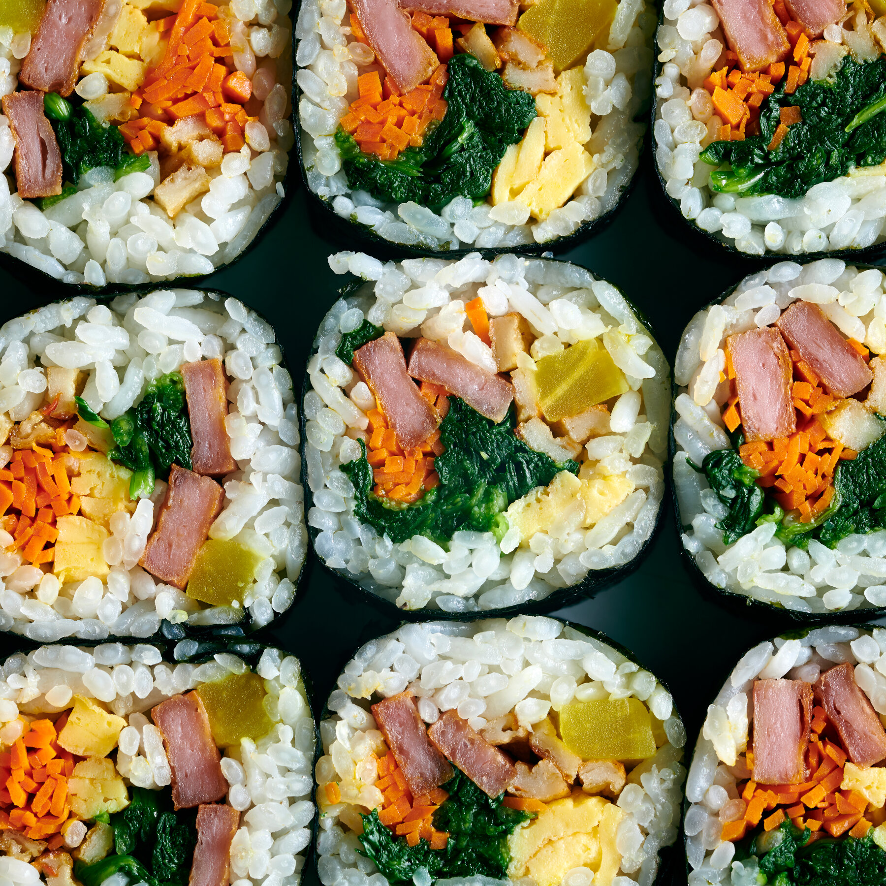

Kimbap

Description
Kimbap is a korean dish that is made up of seaweed (kim) and rice (bap).
The filling generally consists of vegetables and meat.
Some staple veggies in this dish are spinach, egg, carrot, danmuji (pickled radish)
The meat filling could range from spam, to beef, to shrimp tempura.
Ingredients
- 4 cups Cooked rice
- 1 can of spam
- 3 eggs
- sheets of seaweed
- 1 carrot cut into matchsticks
- 5 strips of pickled radish
- 5 ounces blanched spinach
- 3 cloves garlic
- 3 teaspoon of soy sauce
- 3 teaspoon of sesame oil
- salt
Steps
- Before rice cools, mix in sesame oil and dash of salt
- In a bowl mix the spinach with two garlic cloves and a teaspoon of sesame oil
- mix carrots with a couple dashes of salt and let them sweat for 10 minutes
- cut the spam into strips and cook on pan until cooked
- sqeeze out extra water and saute carrots for a minute
- mix eggs in pan and let them form to the pan, flip when cooked on other side
- cut everything into strips if not already small enough to fit into roll
- grab plastic wrap and put on surface that you will roll on
- place down seaweed sheets, then half a cup of rice
- add a couple strips of spam, egg, and some veggies to the fill the roll,
being careful not to to overfill
- use both hands to roll the plastic wrap/seaweed over itself and squeeze it gently before you start rolling to seal it
- feel free to brush some seasame oil on top once finished and you are ready to cut it and eat